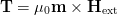
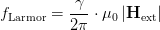
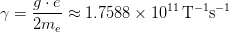
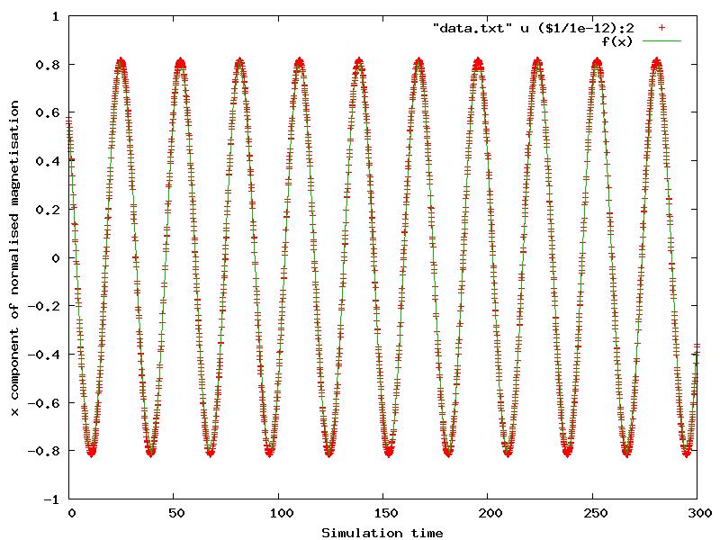

This example shows how to derive the period of the Larmor precession for the magnetisation and compare the result from simulation to the analytical solution. It is inspired by an example from the magpar documentation (http://magnet.atp.tuwien.ac.at/scholz/magpar/doc/html/examples.html#sphere_larmor).
We us the larmor.py script:
import nmag from nmag import SI, every, at, si #create simulation object and switch off #the computation of the demagnetising field sim = nmag.Simulation(do_demag = False) # define magnetic material so that Js = mu0*Ms = 1 T Py = nmag.MagMaterial(name="Py", Ms=1.0*si.Tesla/si.mu0, exchange_coupling=SI(13.0e-12, "J/m"), llg_damping = SI(0.0) ) # load mesh sim.load_mesh("sphere1.nmesh.h5", [("sphere", Py)], unit_length=SI(1e-9,"m") ) # set initial magnetisation sim.set_m([1,1,1]) # set external field Hs = nmag.vector_set(direction=[0.,0.,1.], norm_list=[1.0], units=1e6*SI('A/m') ) ps = SI(1e-12, "s") # ps corresponds to one picosecond # let the magnetisation precess around the direction of the applied field sim.hysteresis(Hs, save=[('averages', every('time', 0.1*ps))], do=[('exit', at('time', 300*ps))])
We turn off computation of the demagnetising field:
sim = nmag.Simulation(do_demag = False)
and set the damping term in the LLG equation to zero:
llg_damping = SI(0.0)
We set saturation magnetisation to Js = 1 T (see Library of useful si constants):
Ms=1.0*si.Tesla/si.mu0
We use a sphere as the magnetic object and, starting from a uniform magnetic configuration along the [1,1,1] direction:
sim.set_m([1,1,1])
To compute the time development in the presence of a static field pointing in the z-direction, we ‘’abuse’’ the hysteresis command (because this way we can conveniently save the data at equidistant time intervals). To do this, we need to find the sequence of applied fields (here it is only one, of course):
Hs = nmag.vector_set( direction=[0.,0.,1.],
norm_list=[1.0],
units=1e6*SI('A/m')
)
and then use the hysteresis command:
sim.hysteresis(Hs,
save=[('averages', every('time', 0.1*ps))],
do=[('exit', at('time', 300*ps))])
The hysteresis command will save the averages (which is what we need to for the fit below) every 0.1 pico seconds. Once we reach the time of 300 pico seconds, the method will exit.
The dynamics of the magnetisation is driven only by the Zeeman effect, with a torque:

acting on the magnetisation m which is orthogonal to both m and H; thus causing the magnetisation to precess around the applied field direction. The frequency of the precession, called f_Larmor, is given by:

where the parameter gamma, called gyromagnetic ratio, is taken to have the following value (see [1] ):

so that f_Larmor = 35.176 GHz and the period T = 1/f_Larmor = 0.0284284 ns.
We save the average magnetisation every 0.1 ps in order to have a sufficient number of points to compute the period T.
We execute the script as usual:
$ nsim larmor.py
and extract the (spatially averaged) magnetisation data for all save time steps:
$ ncol larmor time m_Py_0 m_Py_1 m_Py_2 > data.txt
Using Gnuplot, we extract the value of the Larmor period T from the x-component of the magnetisation:
$ gnuplot
and the following command plots the x component of the magnetisation as a function of the simulation time, together with a fit for a function f(x) (where x represents time):
gnuplot> f(x) = A*sin(2*pi*x/B + C) + D
gnuplot> B = 30
gnuplot> fit f(x) "data.txt" u ($1/1e-12):2 via A,B,C,D
gnuplot> plot "data.txt" u ($1/1e-12):2, f(x)
The result is the following image:
The values for B in the fit, which corresponds to the unknown period T, is initially set to 30 in order to help Gnuplot fit the curve. Such fit on T gives the value 28.4293; this value corresponds to 0.0284293 ns when rescaled by the 10e12 factor used for the plotting, and shows a difference starting from the 5th digit when compared to the analytical solution of 0.0284284 ns.
| [1] | See the OOMMF manual, and in Werner Scholz thesis, after (3.7), llg_gamma_G = 2.210173e5 m/(As). |